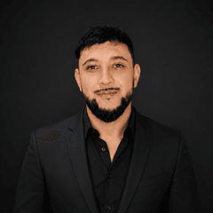

Luciano Banegas
Co-Fundador · Automatización + IntegracionesAnalista de Sistemas con más de 4 años de experiencia en automatización de procesos, integraciones entre sistemas y soluciones orientadas al negocio. Especialista en SAP y trazabilidad de datos.
- Especialización en SAP: consultas avanzadas, integraciones, reporting y mejora operativa.
- Experiencia en ERPs, datos, trazabilidad e interfaces entre sistemas.
- Foco fuerte en ROI: menos tiempo operativo, menos errores, mayor control y escalabilidad.
- Formación continua en IA aplicada, automatización y nuevas tecnologías.